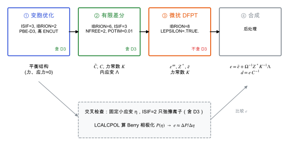

压电计算链里的 VASP 设置与理论对应
把有机分子晶体压电计算链里每一步用到的 VASP 参数对到背后的理论条目上，写清每一步在什么条件下可信、局限在哪里，以及计算链还没用到、可以延伸的方法。
直观阅读需要
只是提示，不需要先读完才能往下看。
这一页怎么用直观解释
压电计算链把一个优化好的分子晶体变成压电张量 d。它分四步，每一步都对应理论地图里已有的几个条目。这一页不重新讲理论，只做三件事：把 INCAR 参数对到理论上；写出每一步的前提，前提不成立时结果就不可信；列出计算链还没用、但可能需要的方法。

| 符号 | 是什么 | 图里对应 |
|---|---|---|
| \bar C、C | 夹持离子、弛豫离子弹性张量 | ② 的输出 |
| K | 去掉平移零模的力常数矩阵 | ② 和 ③ 都给出，见下文“两份力常数” |
| \Lambda | 内应变张量：应变在原子上产生的力 | ② 的输出 |
| \varepsilon^{\infty}、Z^{*}、\bar e | 电子介电张量、玻恩有效电荷、夹持离子压电张量 | ③ 的输出 |
| \Omega | 晶胞体积 | ④ 的公式 |
| \eta、P(\eta) | 小应变与该应变下的宏观极化 | 虚线框（交叉检查） |
④ 中的组合公式和 d 与 e 的换算见 压电张量。
参数—理论对照对应与边界
| 步骤 | 关键参数 | 背后的理论 | 这一步默认的前提 |
|---|---|---|---|
| ① 变胞优化 | ISIF = 3，IBRION = 2，EDIFFG < 0，ENCUT 高 | 晶体的结构优化：原子与晶胞，Hellmann–Feynman 定理：力与应力（力与应力），平面波基组与截断能（Pulay 应力） | 找到的是局部极小，且就是要研究的那个多晶型 |
| ① 电子部分 | GGA 默认 PBE，PAW 势，PREC = Accurate，EDIFF | Kohn–Sham 密度泛函理论，PBE 泛函与广义梯度近似，赝势与 PAW 方法，自洽场循环与密度混合 | 闭壳层、有带隙；PBE 给出的电子结构定性正确 |
| ① 色散 | IVDW = 11（D3 零阻尼），VDW_S8、VDW_SR 等 | 色散校正 | 参数与 PBE 配套；成对加三体以外的多体效应可以忽略 |
| ① 占据与 k 点 | ISMEAR = 0，SIGMA = 0.05，Γ 中心网格 | 电子占据与展宽，倒空间、布里渊区与 k 点采样 | 带隙远大于展宽；k 点网格随晶胞形状调整 |
| ② 有限差分 | IBRION = 6，ISIF = 3，NFREE = 2，POTIM = 0.01 | 有限差分与微扰方法，弹性张量，声子与晶格动力学 | 参考结构无残余应力和残余力；步长落在截断误差与噪声之间 |
| ③ 微扰 | IBRION = 8，LEPSILON = .TRUE. | 微扰理论与线性响应，介电张量与玻恩有效电荷，极化与 Berry 相 | 绝缘体；所用泛函在线性响应里有实现 |
| ④ 合成 | 脚本组合 \bar e、Z^{*}、K、\Lambda、C | 压电张量，张量与坐标变换 | 所有量来自同一结构、同一设置；Voigt 约定一致 |
| 交叉检查 | 应变胞 ISIF = 2，LCALCPOL = .TRUE. | 极化与 Berry 相，有限差分与微扰方法 | 应变足够小、极化在同一分支上 |
| 有限温度（计划中） | MD 轨迹上的应变与极化 | 涨落公式：从平衡涨落求响应张量，分子动力学 | 经典核、遍历、轨迹足够长 |
各步的适用与局限对应与边界
① 变胞优化
- 适用：0 K、静态晶格下的平衡结构。对分子晶体，晶格参数的误差主要来自色散校正和泛函，而不是数值设置。
- 局限 1：没有温度。优化给的是势能面极小，没有零点振动和热膨胀，与室温实验晶胞比通常偏小。需要时用 准简谐近似与热膨胀 修正。
- 局限 2：Pulay 应力。变胞时平面波数目固定，有效截断能随体积变化。截断能取高（这里 800 eV），或者优化后从新晶胞重启再优化一次 [VASP Wiki: Pulay stress]。见 平面波基组与截断能。
- 局限 3：质子位置。对有机盐和共晶，PBE 可能把质子放错到另一侧，结构“优化成功”但化学上是另一个物种。见 质子归属：盐与共晶。
② 有限差分弹性与力常数
- 适用：任何能给出力和应力的哈密顿量，包括 D3。它是计算链里唯一把 D3 计入力常数和内应变的一步。
- 局限 1：截断能不一致。若 ② 用的
ENCUT比 ① 低（例如 600 对 800），① 得到的“零应力”结构在 ② 的设置下不再是零应力，残余应力会混入弹性常数（见 弹性张量 的“常见坑”）。要么两步用同一截断能，要么在 ② 的设置下重新优化。 - 局限 2：自洽精度。差商的噪声项与
EDIFF有关。EDIFF = 1E-6对总能够用，对力常数的差商可能偏松；参考流程里有限差分用1E-8。 - 局限 3：软模与非谐。分子晶体的分子转动、氢键模式很软，
POTIM = 0.01Å 的中心差分对它们可能已经偏大或偏小，需要按 有限差分与微扰方法 做步长测试。
③ 微扰 DFPT
- 适用：有带隙的体系，给出电子部分（\varepsilon^{\infty}、Z^{*}、\bar e）而不需要步长。
- 局限 1：两份力常数。③ 也给出力常数，但不含 D3（见下面的“项目记录”）。用 ③ 的 K 组合离子项，等于在“PBE 无色散”的能量面上算离子弛豫，与 ① 的结构不自洽。② 的 K 含 D3，两者之差就是色散对离子项的影响。
- 局限 2：泛函支持。线性响应不支持杂化泛函；需要杂化泛函时改用有限电场方法，见 有限电场方法。
交叉检查：应变加 Berry 相
- 适用：直接按定义 e = \partial P/\partial\eta 求弛豫离子压电张量，离子弛豫在含 D3 的能量面上做，不依赖 ③ 的力常数 [Wu, Vanderbilt & Hamann 2005]。
- 局限：极化只定义到一个极化量子，各应变下要取同一分支；还要区分 proper 与 improper 压电张量（见 极化与 Berry 相）。每个应变都要完整弛豫离子，代价比 ② 和 ③ 高。
可以延伸的方向对应与边界
| 计算链没覆盖的问题 | 可以用的方法 | 条目 |
|---|---|---|
| PBE 低估带隙，\varepsilon^{\infty} 和 Z^{*} 可能偏大 | 杂化泛函加有限电场 | 有限电场方法，交换关联泛函 |
| 室温下的 d，以及软模的非谐贡献 | 有限温度 MD 的涨落公式 | 涨落公式：从平衡涨落求响应张量 |
| 热膨胀改变晶胞，进而改变 C 和 e | 准简谐近似 | 准简谐近似与热膨胀 |
| 成对色散对极化率高的芳香体系不够 | 多体色散（MBD） | 色散校正 |
| 批量候选结构太多，DFT 太贵 | MLIP 预优化，长程静电模型预测 Z^{*} | 机器学习势，机器学习势中的长程静电与电场响应 |
检验自己对应与边界
参考资料
官方文档VASP Wiki: IBRION
VASP Wiki, IBRION（结构优化、有限差分与 DFPT 的选择）
尚未实际查阅，目前只是拟查阅书目
官方文档VASP Wiki: ISIF
VASP Wiki, ISIF（结构优化时放开哪些自由度、是否计算应力）
尚未实际查阅，目前只是拟查阅书目
官方文档VASP Wiki: ISMEAR
VASP Wiki, ISMEAR（占据函数与展宽方法的选择）
尚未实际查阅，目前只是拟查阅书目
官方文档VASP Wiki: LEPSILON
VASP Wiki, LEPSILON（线性响应计算介电与压电张量）
尚未实际查阅，目前只是拟查阅书目
官方文档VASP Wiki: IVDW
尚未实际查阅，目前只是拟查阅书目
官方文档VASP Wiki: LCALCPOL
VASP Wiki, LCALCPOL（Berry 相方法计算宏观极化）
尚未实际查阅，目前只是拟查阅书目
官方文档VASP Wiki: Pulay stress
VASP Wiki, Pulay stress（基组不完备导致的应力误差）
尚未实际查阅，目前只是拟查阅书目
论文Grimme 2010
尚未实际查阅，目前只是拟查阅书目
论文Wu, Vanderbilt & Hamann 2005
尚未实际查阅，目前只是拟查阅书目
分类计算方法论 · 综合 · 研究线：压电与响应计算、结构预测与能量景观 · 状态：草稿